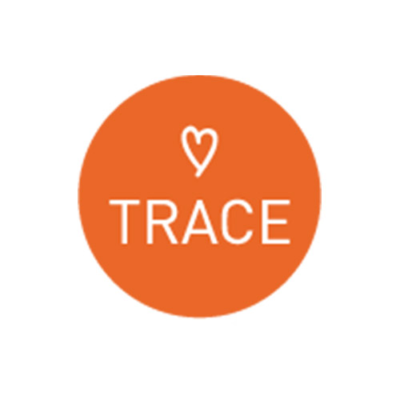
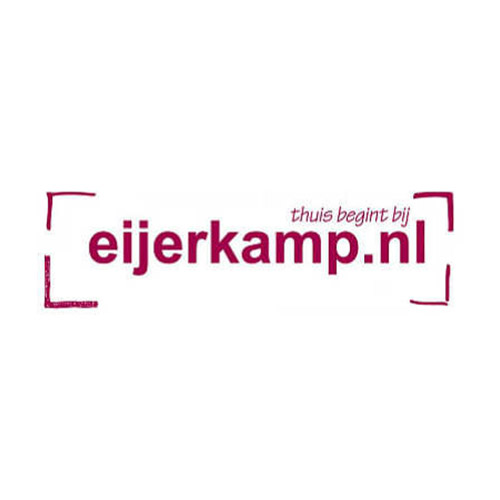
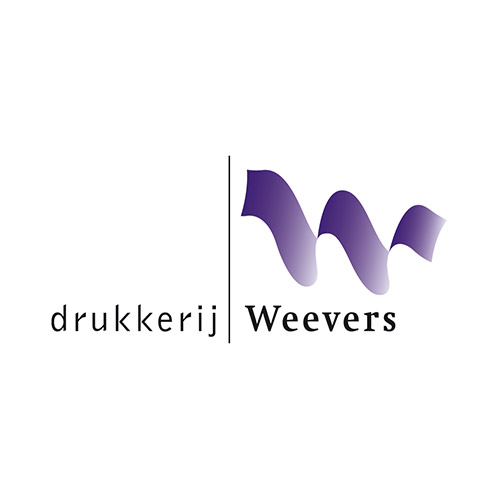
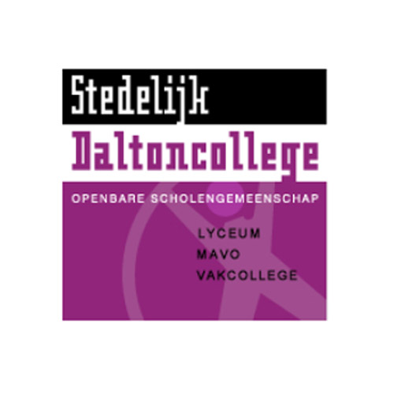

<link rel="import" href="../../bower_components/polymer/polymer-element.html">
<link rel="import" href="../styles/title-bar.html">

<dom-module id="nanco-resume-content">
  <template>
    <style include="title-bar">
      :host {
        display: block;
        box-sizing: border-box;
      }

      *, *::before, *::after {
        box-sizing: inherit;
      }

      .content-box {
        margin: 16px 0 32px;
      }

      .content-box p {
        margin: 0;
      }

      .content-box > * {
        display: flex;
        align-items: center;
      }

      .content-box > *:not(:first-child) {
        border-top: 2px solid #e8e8e8;
        margin: 16px 0;
        padding: 16px 0 0;
      }

      .content-box > *:last-child {
        margin-bottom: 0;
      }

      .content-box .logo {
        flex: 0 0 80px;
        margin-right: 8px;
      }

      .content-box .logo img {
        width: 100%;
        height: auto;
      }

      .content-box .text {
        flex: 1;
      }

      .content-box .text .date {
        font-weight: 600;
        margin-bottom: 8px;
      }

      @media (max-width: 840px) {
        :host {
          --nanco-title-bar-offset: 48px;
        }
      }

      @media (max-width: 720px) {
        .title-bar {
          width: calc(100% + calc(var(--nanco-title-bar-offset) * 2) - 1px);
        }
      }
    </style>

    <div class="title-bar">
      <h2>Werk (Stage)</h2>
    </div>

    <div class="content-box">
      <div>
        <div class="logo"></div>
        <div class="text">
          <p class="date">2018 (half jaar)</p>
          <p>Kantoorprofi.nl, Bemmel<br>
          Afstuderen, Ondwerp</p>
        </div>
      </div>

      <div>
        <div class="logo"></div>
        <div class="text">
          <p class="date">2016 (half jaar)</p>
          <p>Tweakers, Amsterdam<br>
          Ontwerper, D.T.P.</p>
        </div>
      </div>

      <div>
        <div class="logo"></div>
        <div class="text">
          <p class="date">2013 (kwart jaar)</p>
          <p>Trace, Apeldoorn<br>
          Ontwerper, D.T.P</p>
        </div>
      </div>

      <div>
        <div class="logo"></div>
        <div class="text">
          <p class="date">2011 (kwart jaar)</p>
          <p>Eijerkamp, Zutphen<br>
          Ontwerper, D.T.P.</p>
        </div>
      </div>

      <div>
        <div class="logo"></div>
        <div class="text">
          <p class="date">2009 (kwart jaar)</p>
          <p>Drukkerij Weevers, Vorden<br>
          Snuffelstage bij de dtp drukkerij en nabewerking.</p>
        </div>
      </div>

      <div>
        <div class="logo"></div>
        <div class="text">
          <p class="date">2008 (kwart jaar)</p>
          <p>Smurfit Kappa, Deventer.<br>
          Snuffelstage bij de D.T.P. drukkerij en nabewerking.</p>
        </div>
      </div>
    </div>

    <div class="title-bar">
      <h2>Opleiding</h2>
    </div>

    <div class="content-box">
      <div>
        <div class="logo"></div>
        <div class="text">
          <p class="date">2005 &ndash; 2009</p>
          <p>Stedelijk Dalton College, vmbo-kb, Zutphen.<br>
          Richting Grafiemedia, Engels, Nederlands, wiskunde.<br>
          Diploma behaald</p>
        </div>
      </div>

      <div>
        <div class="logo"></div>
        <div class="text">
          <p class="date">2009 &ndash; 2014</p>
          <p>Deltion College, grafisch vormgever, Mbo niveau 4, Zwolle.<br>
          Diploma behaald.</p>
        </div>
      </div>

      <div>
        <div class="logo"></div>
        <div class="text">
          <p class="date">2015 &ndash; 2019</p>
          <p>Saxion, Kunst en Techniek, Hbo, Enschede.<br>
          Diploma behaald.</p>
        </div>
      </div>
    </div>

  </template>

  <script>
    class NancoResumeContent extends Polymer.Element {
      static get is() { return 'nanco-resume-content'; }
    }

    window.customElements.define(NancoResumeContent.is, NancoResumeContent);
  </script>
</dom-module>
